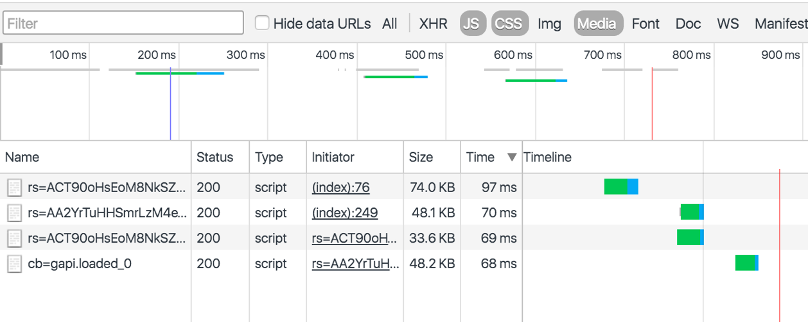
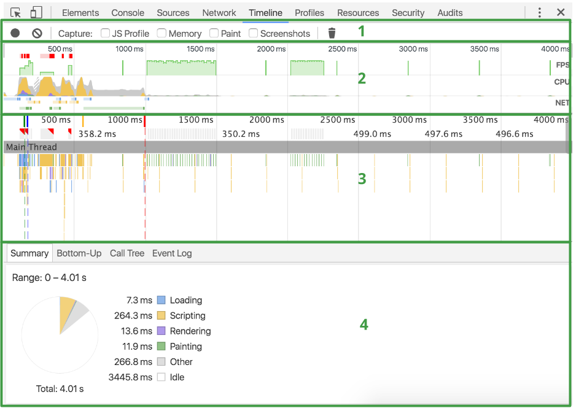

Chrome DevTools включва набор от инструменти за показване на същността на една уеб страница и отстраняване на грешки (debugging), които са вградени в Google Chrome.
Най-новите функционалности са налични първо във beta версията на браузъра - Chrome Canary.
Chrome DevTools могат да се достъпят от: Още инструменти > Инструменти за разработчици (More Tools > Developer Tools) от менюто в Chrome или чрез командите
С помощта на панела Elements в Chrome DevTools може да се преглежда и редактира в реално време HTML и CSS на дадена страница
Редактиране на DOM
За да се редактира DOM възел, просто трябва да се щракне два пъти върху избрания елемент и да направят някакви промени.
Изгледът на DOM дървото показва текущото му състояние на: той не може да съвпада с HTML-а, който първоначално е бил зареден по различни причини. Например, може да се модифицира DOM дървото с помощта на JavaScript.
Редактиране стил в реално време
В панела Стилове (Styles) могат да се редактират style property names и техните стойности. Всички стилове могат да се редактират, с изключение на тези, които са в сиво.
За да се промени име или стойност, трябва да се кликне върху него, да се направят съответните промени и да се натисне Tab или Enter, с цел запазване на промените.
Фиг2. - Редактиране на стилове
По подразбиране, CSS модификациите, които не са постоянни, а се губят, когато се презареди страницата. Въпреки това има начини и това да се поправи.
Разглеждане и редактиране на параметрите на box model-a
С помощта на панела Компютърна (Computed) може да се разглеждат и редактират параметрите на box model-а на текущия елемент. Всички стойности са редактируеми, чрез кликване върху тях.
Фиг3. - Box model
Концентрични правоъгълници съдържат top, bottom, left, right стойностите на свойствата за padding, border и margin на текущия елемент.
Фиг4. - Box model на елемент от страницата
За не-статично разположени елементи, презставенето е по същия начин. За eлементите съдържащи свойствата position: fixed или position: absolute, централното поле съдържа действителите измерения на пикселите на избрания елемент. Промените не са, обаче, гарантирани да влязат в сила, тъй като това е предмет на конкретни специфики в позиционирането на елемента.
Фиг5. - Box model на елемент от страницата
Преглед на локалните промени
За да се види историята на направените промени трябва в панела Стилове (Styles) да се щракне върху файла, който е променен и сътветно DevTools показва панела Източници (Sources). От там при щракване с десния бутон върху файла и избор на Локални модификации (Local modifications) се показва история на локалните промените.
Панелът Конзола (Console) в Chrome DevTools преодставя начин за директно взаимодействие със страница в реално време.
Конзолата позволява се да използват стандартни изрази от JavaScript и специфични за конзолатата команди, докато страницата е в браузъра, с цел да се намерят проблеми и грешки в нея. Освен това, тя предоставя възможност за преглед на диагностични съобщения, изобразяване на необработени и структурирани данни, контрол и филтриране на изходаните данни, разглеждане и промяна на елементи на страницата, измерване на времето за изпълнение, както и много повече.
Отваряне на конзолата
Достъп до конзолата може да се осъществи като панел на цял екран:
Фиг6. - Конзолата като панел на цял екран
Друга възможност е, като вторичен панел, който се отваря под всеки друг панел:
Фиг7. - Конзолата като вторичен панел
Отваряне като панел на цял екран
За да се отвори панела трябва
Да се отвори панела Конзола (Console)
Да се натисне Ctrl + Shift + J (Windows / Linux) или Cmd + Opt + J (Mac).
Ако DevTools вече е отворен, да се натисне бутона Конзола (Console).
Отваряне като вторичен панел
За да се отвори конзолата като вторичен панел в непосредствена близост до всеки друг панел трябва:
Да се натисне Esc, докато DevTools е на фокус.
Да се натисне менюто с три вертикални точки и след това да се натисне върху Показване на конзолата (Show console).
Фиг8. - Меню на DevTools
Следене на съобщенията
Ако дадено съобщение се повтаря постоянно, вместо всеки екземпляр от съобщението да се отпечатва на нов ред, конзолата ще струпа съобщенията и ще покаже число в лявото поле. Числото показва колко пъти сe е повторило съобщението. Тази настройка може да се помени от настройките на DevTools.
Фиг9. - Групиране на повтарящи се съобщения в конзолата
Тъй като самият timestamp на всяко съобщение е различен, всяко такова съобщение се извежда на отделен ред.
Фиг10. - Съобщения в конзолата
Работа с историята на конзолата
Изчистване на историята
Историята може да се изчисти, като се направи някое от следните:
Да се натиснe с десния бутон на конзолата и след това на Изчистване на конзола (Clear console).
Да се въведе clear() в конзолата.
Да се извика console.clear() в JavaScript кода.
Да се натисне Ctrl + L (Mac, Windows, Linux).li>
Трайно запазване на историята
Чрез слагане на отметка на Съхраняване на написаното (Preserve log) в горната част на конзолата, се запазва историята на конзолата при презареждане или промяна на страницата.. Съобщенията ще се съхраняват, докато се изчисти конзолата или се затвори раздела.
Записване на историята
При натискане с десния бутон на конзолата и избор на Запази като (Save as) се записва изхода на конзолата в log файл.
Филтриране на изхода (output) на конзолата
При натискане върху бутона Филтър (Filter)
, се филтрира изходния поток на конзола. Може да се филтрира по ниво на важност, чрез регулярен израз или чрез скриване на мрежови съобщения.
Chrome DevTools предлага мощни breakpoint функции в панела Източници (Sources), които помагат да се открият и отстранят логически грешки в JavaScript кода. Използват се различни видове breakpoints, за да контролира точно какви условия могат да доведат до спиране на изпълнението на скрипта.
Докато се имлементира една уеб страница DevTools би помогал да се локализират и поправят грешки в JavaScript кода. Но в изпълняващ се скрипт, погрешният код почти сигурно ще бъде обработен преди да може да се идентифицира.
Решението а това е да се спре изпълняващият се JavaScript в различни точки, така че да може да се определи неговия прогрес или да се проучат стойностите на неговите променливи. Чрез brekapoints в DevTools може да се направи пауза на кода, без да се налага да използват скриптове като: alert("ok so far")or alert("x = " + x).
В DevTools има два вида breakpoints на разположение: ръчни (manual) и условни (conditional).
ръчни (manual) – отделни brreakpoints, които се задават на конкретен ред от кода, и могат да се включат в употреба от интерфейса на DevTools или чрез вкарване на ключовата дума debugger в кода.
условни (conditional) – задействат се, когато дадено условие е изпълнено (например, когато onclick събитието е налице, изключение (exception) не е уловено и т.н.) и те могат да се включат в употреба от интерфейса на DevTools.
Преглед на breakpoints
Съществуващите breakpoints могат се видят по всяко време в панела Източници (Sources) по следния начин:
Отваря се менюто на Chrome
Избира се Още инструменти (More tools) > Инструменти за разработчици (Developer tools), или се натиска с десния бутон върху елемент от страницата и се избира Инспектиране на елемент (Inspect element) от контекстното меню.
Избира се панела Източници (Sources)
Breakpoints са показани в страничната лента (sidebar), групирани по вид:
Фиг11. - Видове breakpoints
Ръчно създаване на breakpoints
Приложение
Този вид breakpoints e добре да се използват, когато има силни подозрения, къде може да се получи проблем в изпълнението и в кода. Тогава се налага да се инспектира стека на извикване (call stack) и стойностите на променливите точно в този момент.
Ръчно добавяне на breakpoint на ред с код
За да се добави breakpoint на някой ред от кода, трябва да се направи едно от двете:
Да се натисне върху номера на реда с код, на който да се зададе breakpoint. Може да се добавят и няколко, като се кликне на съответните номера на редове.
Да се постави ключовата дума debugger в кода, което е еквивалентно на създаването на breakpoint на този ред.
Фиг12. - Създаване на breakpoint
За да се забрани временно даден breakpoint, е нужно да се премахне отметката му от checkbox-а в страничната лента (sidebar).
За премахване на breakpoint, трябва да се натисне върху номера на даден ред отново или чрез натискане с десния бутон върху съответния breakpoint в страничната лента (sidebar) и избиране на Премахване точка на прекъсване (Remove breakpoint).
Създаване на условни breakpoints
Същност и видове
Условните breakpoints се използват, когато трябва да се зададат много breakpoints наведнъж. Например, да предположим, че има грешки при премахване на DOM възли. Има 20 различни места, от където може да се е появила грешката. Вместо ръчно да се поставят breakpoints преди всеки подозрителен ред код, може просто да се зададе условен breakpoint. Той се задейства всеки път, когато някоя код премахва DOM възел.
DevTools предвижда четири вида условни breakpoints:
Събития за промяна на DOM (вмъквания, модификации, изтриване)
XMLHttpRequest
JavaScript слушатели на събития (event listeners)
Неуловени изключения
Breakpoint преди събитие за промяна на DOM
Breakpoint на събития за промяна на DOM се използва, когато скрипта е на път да вмъкне, промени или изтрие DOM възел и трябва да се наблюдава тази промяна. Изпълнението се спира, когато определен DOM възел трябва да бъде променен, преди да се приложи на промяната.
За да се добави breakpoint в този случай, трябва да се отвори панела Elements (Елементи) и с десния бутон да се натисне върху изследвания елемент. От контекстното меню е нужно да се натисне на Прекъсни на … (Break on …), а след това на една от опциите: Модификация на поддърво (Subtree modifications), Модификация на атрибути (Attributes modifications) или Премахване на възел (Node removal).
Фиг13. - Спиране на изпълнението при модификация на поддърво (subtree modification)
Временно деактивиране на DOM breakpoint се осъществява, като се премахне отметката в своето квадратче в страничната лента.
За да се премахне DOM breakpoint, e нужно да се натисне с десния бутон на елемента отново, след това се избере Пресъсни на … (Break on …), а след това Премахване на възел (Node removal). Друг вариант е да се натисне с десния бутон на breakpoint в страничната лента и да се избере Премахване на breakpoint (Remove breakpoint).
Прекъсване на XMLHttpRequest
Има два начина, по които може да се създадат условни breakpoints за XMLHttpRequest :
Когато URL адреса на заявката съдържа определен низ - DevTools прекъсва изпълнението преди да се изпрати заявката.
Преди определено XMLHttpRequest събитие - DevTools прекъсва изпълнението точно преди то да се е случило.
Прекъсване на изпълнението когато URL адресът на XMLHttpRequest съдържа определен низ
За да се прекъсне, когато XMLHttpRequest URL адресът съдържа специфичен низ, трябва да се направи следното:
Да се кликне върху бутона Добавяне на XHR breakpoint (Add XHR breakpoint)
в страничната лента.
В полето Прекъсване когато URL съдържа (Break when URL contains), е нужно да се въведе низ, който URL адресът трябва да съдържа. Той определя кога XHR заявката трябва да прекъсне изпълнението и да се натисне Enter.
Фиг14. - Прекъсване когато URL съдържа "data.txt"
За редактиране на полето, трябва да се кликне два пъти върху самия breakpoint.
За да премахнете breakpoint, е нужно да се натисне с десния бутон на него, а след това де се изберете Премахване на breakpoint (Remove breakpoint).
Прекъсване на изпълнението преди определено XMLHttpRequest събитие
За да се прекъсне преди определено XMLHttpRequest събитие да се задейства, трябва да се направи следното:
Да се отиде до панела Слушател на събития / Event listener за breakpoints (Event Listener Breakpoints).
Да се разшири на падащото меню XHR.
Да се избере етап в жизнения цикъл на събитието, в което трябва да се прекъсне изпълнението.
Прекъсване на изпълнението преди слушателя на JavaScript събитие (JavaScript event listener) да е задействан
Може да се използва слушателя на JavaScript събитие (JavaScript event listener), когато трябва да се види как дадено събитие (като натискане на клавиш) се обработва от скрипта. Изпълнението се спира преди слушателя на събитието (event listener) е задействан.
За да се добави слушател на събитие (event listener) за breakpoint, е нужно да се направи следното:
Да се разгъне секцията Слушател на събития / Event listener за breakpoints (Event Listener Breakpoints) в страничната лента, а след това да се разгъне категорията на слушателя, който трябва да се прекъсне (Анимация (Animation), Контрол (Control) и т.н.).
Под разширената категорията у нужно да се кликне върху квадратчето за типа на слушателя (listener), който би трябвало да предизвика прекъсване. За да изберат всички възможни видове слушателя в категория, трябва да се натисне върху квадратчето за самата категория
Фиг15. - Прекъсване при събитие mouseout
За премахване на слушател на събития / еvent listener за breakpoints (Event Listener Breakpoint) трябва да се премахне отметката от съответното квадратче.
Прекъсване на изпълнението при неуловено изключение
Това се осъществява при натискане върху бутона Пауза при изключение (Pause on Exception)
в панела Източници (Sources) на DevTools, за да се спре изпълнението на скрипта на всяко неуловено изключение. Освен това може да се види стека повикване (call stack), водещ до неуловеното изключение в конзолата.
Никога не прекъсвай изпълнението тук
Понякога условните breakpoints предизвикат многократно прекъсване на ред от кода, който не е свързан с проблема за отстраняване. Може да каже на дебъгера (debugger) никога да не спира на определен ред по следния начин:
Да се натисне с десния бутон върху номера на реда.
Да се изберете "Никога не спирай тук" (Never pause here) от контекстното меню.
Фиг16. - Никога не спирай тук (Never pause here) Категория Network Нагоре Измерване на времето за зареждане на ресурсите
Въведение
С помощта на панела Network може да се измери производителността на мрежата на даден сайт. Той записва информация за всяка мрежова операция на дадена страница, включително подробни данни за времето за зареждане на различни компоненти, HTTP заявки и хедъри (headers), бисквити (cookies) и други.
Фиг17. - Панелът Network
Преглед на панела
Панелът се състои от пет компонента:
Контроли (Controls) - тези опции се използват, за да се контролира как панела изглежда и функционира.
Филтри (Filters) - тези опции служат, за да си контролира кои ресурси са показани в таблицата на заявките.
Преглед (Overview) - тази графика показва график (timeline) за това кога са били изтеглени ресурсите. Ако се виждат множество от стълбове, подредени вертикално едно над друго, то това означава, че тези ресуси са били изтеглени едновременно.
Таблица на заявките (Requests Table) - Тази таблица съдържа всеки ресурс, който е изтеглен. По подразбиране, тази таблица е подредена в хронологичен ред, като най-ранните ресурси се в горната част. При кликване върху името на даден ресурс се дава повече информация за него.
Резюме (Summary) - този прозорец ви казва общия брой на заявките, размера на прехвърлените данни, както и времето за зареждане.
Фиг18. - Компоненти на панела Network
Таблицата на заявките показва следните колони по подразбиране, които могат да се добавят и премахват:
Име (Name) - името на ресурса
Статус (Status) - кодът на HTTP състоянието (HTTP status code)
Тип (Type) - типът MIME на искания ресурс.
Инициатор (Initiator) - обектът или процесът, който инициира заявката, като той може да има една от следните стойности:
Парсър (Parser) - HTML парсърът на Chrome, иницииращ заявката.
Други (Other) - някой друг процес или действие, който инициира заявката и препраща към страница с помощта на хипервръзка (hyperlink) или чрез въвеждане на URL в адресната лента (address bar).
Размер (Size) - комбинираният размер на хедъра (header) и тялото (body) на отговора (response), както е предоставен от сървъра.
Време (Time) - общата продължителност от началото на заявката до получаване на последния байт в отговора.
График (Timeline) - колоната График (Timeline) показва визуално като водопад всички заявки, а чрез кликване върху заглавната част на тази колона се показва меню с допълнителни полета за сортиране.
Записване на дейността на мрежа
Когато панелът Мрежа (Network) е отворен, DevTools записва цялата мрежова активност по подразбиране. За запис, просто трябва да се презареди страницата, докато панелът е отворен, или да се изчака за мрежова активност на заредената в момента страница.
Може да се разбере дали DevTools записва чрез бутона Запис. Когато той е червен
, DevTool записва, а когато е сив
, не. Чрез кликване върху този бутон се започва или спира записа или чрез натискане на клавишната комбинация CMD + E ( Mac )
Създаване на скрийншоти по време на запис
Панелът Мрежа (Network) може да направи скрийншот (screenshot) по време на зареждане на страницата. Тази функция е позната като Филмова лента (Filmstrip).
За да се активира тази функция трябва да се кликне върху иконата Камера. Когато тя е сива, на филмовата лента е забранена
. Когато иконата е синя, тя е активирана
.
Нужно е да се презареди на страницата, за да направи скрийншота, а той се показват над Преглед (Overview).
Фиг19. - Screenshots
Когато мишката върху скрийншот, на панела График (Timeline) се показва вертикална жълта линия, показваща кога е направен той.
Фиг20. - Вертикалната жълта линия на screenshot
При кликване два пъти върху една снимка, може да се види мащабирана версия на скрийншота. Докато той e увеличена, може да се използват лявата и дясната стрелка на клавиатурата, с цел придвижване между направените снимки.
Фиг21. - Направените screenshot-я
Сортиране на заявки
По подразбиране, ресурсите в Таблицата на заявките (Requests Table) са сортирани по време на започване на всяка заявка, като се започне с най-рано появилите се заявки, които са ситуирани отгоре.
При натискане върху заглавието на колона се сортира таблицата по стойността на всеки ресурс за това заглавие. При повторно натискане на същото заглавие се променя реда на сортиране на възходящ или низходящ.
Колоната График (Timeline) е уникална в сравнение с другите. Когато се натисне, тя показва меню с полета за сортиране: График (Тimelinе), Начално време (Start Time), Време за отговор (Response Time), Крайно време (End Time), Обща продължителност (Total Duration) и Забавяне (Latency).
Фиг22. - Полета за сортиране
Филтриране на заявки
Панел Network (Мрежа) предлага множество начини за филтриране, по които се показват ресурси. При натискане върху бутона филтри
се да скрива или показва прозореца Филтри.
При задръжане на Cmd (Mac) или Ctrl (Windows / Linux) и последвало натискане върху филтрите се дава възможността за използване на множество филтри едновременно.

Фиг23. - Използване на множество филтри едновременно
Полето за филтриране на текст е изключително мощно, защото при въвеждане на произволен низ, панелът Network (Мрежа) показва само ресурсите, чиито имена съвпадат с него.
Фиг24. - Филтриране с низа "go"
То също поддържа различни ключови думи, които позволяват да се сортират ресурси по различни свойства, като например размер на даден файла с помощта на ключовата дума. larger-than и много други (has-response-header, method, mime-type, …).
Персонализиране на панела
Големина на редовете
По подразбиране Таблицата на заявки (Requests Table) показва ресурсите чрез малки редове, но чрез настискането на бутона Използване на големи редове за ресурси (Use large resource rows) се увеличава размера на всеки ред.
Големите редове позволяват някои колони да показват по две текстови полета: главно поле и второстепенно поле. Заглавието на колоната показва какво е значението на второстепенното поле.
Фиг25. - Големи редове в панела
Добавяне и премахване на колони в Таблицата на заявки
Чрез настискане с десния бутон върху някоя от заглавията в Таблицата на заявки (Requests Table) може да се добави или премахне на колона.
Фиг26. - Добавяне или премахване на колони в панела Категория Timeline Нагоре Начин на използване на панела Timeline
Въведение
Панелът Времева линия (Timeline) на Chrome DevTools записва и анализира цялата дейност в даден сайт докато той работи. Това е най-доброто място да се започне проучването на проблеми с производителността.
Фиг27. - Панелът Времева линия (Timeline)
Преглед на панела Timeline
Панелът Timeline се състои от четири части:
Контроли (Controls) – позволява да се започне запис, да се спре запис и да се избере каква информация е записана по време на записа.
Преглед (Overview) - обобщение на високо (абстрактно) ниво на производителността на страницата.
Пламъчна диаграма (Flame Chart) - визуализиране на дейността (stack trace) на CPU. Там може да се видят 1-3 пунктирани, вертикални линии. Синята линия представлява DOMContentLoaded събитието. Зелената линия представлява времето до първото „изрисуване“ (paint) на даден елемент на страницата. Червената линия представлява load събитието.
Детайли (Details) - Когато е избрано едно събитие, този прозорец показва повече информация за това събитие. Когато не е избрано събитие, този прозорец показва информация за избрания период от време (time frame).

Фиг28. - Части на панела Времева линия (Timeline)
Прегледът (Overview) от своя страна се състои и от три графи:
FPS - Кадри в секунда (Frames Per Second) - колкото е по-зелена лентата, толкова по-голям е и FPS, а червените ленти над графиката показват дълги кадри (frames), които са вероятните кандидати за проблеми и забавяне .
CPU - процесорни ресурси - тази диаграма показва какъв тип събития използват ресурси на процесора.
NET - всяка цветна лента представлява ресурс. Колкото по-дълга е лентата, толкова по-дълго време се изисква за извличане на ресурса. По-светлата част на всяка лента представлява времето за изчакване (времето между извикването ресурса и изтеглянето на първия байт). Най-тъмна част представлява времето за трансфер (времето между изтеглянето на първите и последните байта).
Лентите са оцветени в различен цвят, както следва: * HTML файловете са сини. * Скриптовяе са жълти. * Стиловете са лилави. * Мултимедийните файлове са зелени. * Дугите видове ресурси са сиви.
Фиг29. - Графи в Преглед (Overview)
Създаване на запис
За да се направи запис на зареждане на страницата (page load), е необходимо да се отвори панела Времева линия (Timeline), след това да се отвори страницата, която трябва да се запише, и да се презареди. Панелът автоматично записва презаредилата се страницата.
За да се направи запис на взаимодействието на дадена страница, трябва да се отвори панела Timeline, а след това се стартира записа с натискане на бутона за Записване (Record)
или чрез въвеждане на клавишната комбинация Cmd + E (Mac) или Ctrl + E (Windows / Linux). Бутонът Записване (Record) се оцветява в червено по време на запис. След извършване на различни действия по страницата, е нужно да се натисне бутона Записване (Record) или да се въведе клавишната комбинация отново, за да се спре записа.
Когато записът приключи, DevTools различава, какво е най-подходящата част от записа и автоматично показва подробно тази част.
Преглед на данните за запис
Когато се избере събитие в Пламъчната диаграма (Chart Flame), панелът с Детайли (Details) показва допълнителна информация за събитието.
Фиг30. - Допълнителна информация за събитието
Някои раздели, като Обобщение (Summary), са налични за всички видове събития. Други раздели са достъпни само за определени видове.
Създаване на скрийншоти (screenshots) по време на запис
От панелът Timeline може да се създаде скрийншот по време на зареждане на страницата. Тази функция е позната като Филмова лента (Filmstrip).
Необходимо е да се активира функцията на Скрийншоти (Screenshots) чрез слагане на отметката в панела за Контроли (Controls) преди да се направи запис. Снимките на екрана се показва по-долу в панела Преглед (Overview).
Фиг31. - Активиране на функцията Скрийншоти (Screenshots)
При задържане курсора на мишката над скрийншота или панела Преглед (Overview) може да се види увеличена версия на снимката в тази момент в записа. Ако се премести мишката наляво и надясно, се симулира анимация на записа.
JavaScript профил
Активирането на този профил се извършва чрез слагане на отметка в checkbox-a, преди да се направи запис, с цел да се улови JavaScript стековете на изпълнение в записа. Когато профила е активирана, в пламъчната диаграма (flame chart) се показва всяка JavaScript функция, която е извикана.
Фиг32. - Активиране на JavaScript профил
Търсене на събития
При търсене на събития може да се съсредоточим върху един вид събития. Например, може би трябва да се видят детайлите на всяко Parse HTML събитие.
При натискане на Cmd + F (Mac) или Ctrl + F (Windows / Linux), докато панела Timeline е на фокус, се отворя лентата с инструменти (toolbar) за търсене. Там се въвежда името на типа на събитието, което трябва да се провери, като например Event.
Лентата с инструменти (toolbar) се прилага само за текущо избрания времеви интервал. Всички събития извън него не са включени в резултатите.
Стрелките нагоре и надолу се използват за хронологично преглеждане на резултатите. Така че, първият резултат представлява най-ранното събитие в избрания период от време, а последният резултат представлява последното събитие. Всеки път, когато си натиска стрелката нагоре или надолу, ново събитие е избрано, така че може да сe видят неговите детайли в прозореца Детайли (Details). Натискането на стрелките нагоре и надолу е еквивалентно на натискане на едно събитие в Пламъчната диаграма (Chart Flame).
Фиг33. - Хронологично преглеждане на резултати
Мащабиране на секция в Timeline
Може да се фокусира върху даден участък от запис, за да се анализира по-лесно. Може да си използва панела за Преглед (Overview), за да се увеличи (zoom) част от записа. След приближаване диаграмата е автоматично мащабирана, за да съответства на същата секция.
Фиг34. - Мащабиране на секция
За да се мащабира в панела Timelin, в Преглед (Overview) трябва да се регулират сивите плъзгачи така че да се избере желаната област.
След като е избрана една област, може да се използват клавишите: W, A, S, и D - за корекция на избора; W и S - за приближаване и отдалечаване и А и D - за движение наляво и надясно, съответно.
Запазване и зареждане на записи
Може да се запазват и отварят записи чрез натискане с десния бутон в Преглед (Overview) или Пламъчна диаграма (Flame chart) последващо избиране на съответната опция.
С помощта на CPU Profiler-а в Chrome DevTools могат да се идентифицират „скъпи“ функции т.е. такива, които се характеризират голямо процесорно време.
Фиг36. - Панел Профили (Profiles)
Записване на CPU профил
Ако се забележи забавяне в изпълнението на JavaScript-а, може да се направи JavaScript CPU профил, който показва колко процесорно време отнемат функциите на дадена страница. Това става по следния начин:
Отваря се панела Профили (Profiles) на DevTools
Избира се опцията Направи JavaScript CPU профил (Collect JavaScript CPU Profile) от радио бутона.
Натиска се Начало (Start).
В зависимост от това, което се опитваме да анализираме, трябва да се презареди страницата, да се взаимодейства със нея или просто да се остави както си е била.
Натиска се бутона Stop, когато сме готови.
Когато записа приключи, DevTools автоматично попълва панела с данните от него.
Преглед на CPU профила
Изглед по подразбиране
Изгледа по подразбиране е Тежък / Heavy (Отдолу нагоре / Bottom Up). Тази гледна точка дава възможност да се види кои функции са имали най-голямо влияние върху производителността и да се разгледа пътя на извикване (calling paths) на тези функции.
Промяна на реда на сортиране
За да се промени реда на сортиране, трябва да се натисне върху падащото меню до иконата фокус върху избраната функция (focus selected function)
И след това да се изберете една от следните опции:
Chart - показва хронологична пламъчна диаграма (flame chart) на записа.
Тежък / Heavy (Отдолу нагоре / Bottom Up) – изобразява списък от функции спрямо въздействието им върху производителността и дава възможност да се изследва пътя на извикване до функциите. Това е изгледът по подразбиране.
Фиг38. - Тежък / Heavy (Отдолу нагоре / Bottom Up)
Дърво / Tree (Отгоре надолу / Bottom Up) - показва обща представа за структурата на извикване (calling paths), като се започне от върха на стека за извикване (call stack).
Фиг39. - Дърво / Tree (Отгоре надолу / Bottom Up)
Изключване на функции
За да се изключи функция от CPU профила, трябва да се натисне върху нея, за да се избере, и след това да се натисне иконата изключване избраната функция (exclude selected function)
. Извикващия изключената функция се повлиява от общото ѝ време на изпълнение.
При натискане върху иконата с име възстановяване на всички функции (restore all functions)
се възстановяват всички изключени функции обратно в записа.
Преглед на CPU профил като Flame Chart
Flame Chart
Изгледът Flame Chart осигурява визуална представа за профила на CPU с течение на времето.
След записването на CPU профила, може да се види записа като пламъчна диаграма (flame chart) от промяна на реда на сортиране.
Фиг40. - Запис като пламъчна диаграма (flame chart)
Пламъчната диаграма е разделена на две части:
Преглед (Overview) - абстрактен/птичи поглед на целия запис. Височината на стълбовете съответства на дълбочината на извикващия стек. Така че, колкото по-висок е, толкова по-дълбоко е в извикващия стек.
Извикващ стек (Call Stacks) - изглед в дълбочина на функциите, които са били извикани по време на записа. Хоризонталната ос е времето и вертикална ос е извикващия стек. Организирано е отгоре-надолу (top-down). Така, функцията на върха e извикала тази по-долу и така нататък.
Функциите са оцветени случайно. Няма връзка с цветовете, използвани в други панели. Въпреки това, функциите са винаги оцветени така че да съответстват на едно извикване. Така може да се вият зависимостите на извикванията.
Фиг41. - Части на пламъчната диаграма (flame chart)
Високо изглеждащ извикващ стек не е непременно важен. Това просто означава, че много от функциите са били извикани. От друга страна, широка лента означава, че извикването е отнело много време, за да завърши. Това са кандидатите за оптимизация.
Подробен преглед на специфични части от запис
При мащабиране (zooming) може да се фокусира върху определени части на извикващия стек. След това автоматично се показва частта от записа, която е избрана.
Фиг42. - Подробен преглед на специфични части от запис
Преглед на подробности за функциите
При натискане върху функция, може да се види нейното дефиниране в панела Източници (Sources).
Чрез задържане на курсора върху функция се показват името ѝ и още малко информация:
Име (Name) - името на функцията.
Самостоятелно време (Self time) - колко време е отнело да завърши текущото извикване на функцията, но без да се включва времето за извикващите ѝ функции.
Общо време (Total time) - Времето, необходимо за завършване на текущото извикване на тази функция и всички функции, които тя извиква .
URL - Местоположението на дефиницията на функцията под формата на file.js:100 , където file.js е името на файла, където функцията е дефинирана и 100 е номера на реда на дефиницията.
Обобщено самостоятелно време (Aggregated self time) - обобщеното време за всички извиквания на функцията в целия запис, без да се включва функции, извикани от тази функция.
Обобщено общото време (Aggregated total time) - обобщеното време за всички извиквания на функцията, включително времето за функциите, извикани от тази функция.
Не оптимизиран (Not optimized) - ако Profiler-а е открил подходяща оптимизация за функцията, то я описва тук.
Чрез панела Ресурси (Resources) се проверяват и управляват ресурсите на локалните данни на дадено приложение или страница. Той позволява да се осъществи достъп до източници на данни като IndexedDB и Web SQL бази данни, бисквитите (cookies), кеша на приложенията (Application Cache), локални и сесийни хранилища на данни (Local / Session Storage), както и ресурси на страниците, като изображения (images), шрифтове (fonts), стилове (styles) и реалните страници.
Фиг44. - Панелът Ресурси (Resources)
Преглед на ресурсите
За да се виждат ресурсите на страницата трябва да се отвори панела Ресурси (Resources) и да се разшири категорията Рамки (Frames).
Папката на най-горното ниво е основният документ.
Вложените папки са вградени рамки (embedded frames) и чрез разширяване на една от тези папки може да се видят ресурсите на рамката.
Под вградените папки (ако има такива) са ресурсите на основния документ (изображения, скриптове, стилове и други).
Самият основен документ.
Фиг45. - Преглед на ресурсите
Прегледите на изображенията (image previews) включват размера на файла, размерите му (дължина и ширина) и MIME типа. Те са разположени в лентата за информация под визуализацията на изображението.
Фиг46. - Преглед на изображение (image preview)
Показване на ресурс в панела Network
Чрез натискане на с десния бутон върху името на даден ресурс и избиране на опцията Reveal in Network Panel (Покажи в панел Мрежа), ресурсите може да се видят и в панела Network. Той се отваря автоматично и подчертава ресурсите в жълто. Ако тази опция не се вижда, може да се презареди страницата, докато DevTools е отворен.
Отваряне на ресурс в нов рездел
При натискане с десния бутон върху даден ресурс и избор на опцията Open Link в New Tab (Отваряне на линк в нов раздел), може да се отвори ресурса в нов раздел на Google Chrome.
Преглед на адрес на ресурс
При натискане върху името на ресурс се вижда подсказка, която показва пълния URL адрес на ресурса. За копиране на URL-а на ресурса до системния клипборд (clipboard), е необходимо да се натисне с десния бутон върху даден ресурс и да се избере опцията Copy link address (Копиране на адреса).
Преглед на граничната кутия (bounding box) на вградена рамка (frame)
При задържане на курсора на мишката върху някоя от папките, които представляват вградена рамка (embedded frame) се вижда граничната кутия (bounding box) на рамката.
HTTPS осигурява критична сигурност и цялост на данните, както на уеб сайтове и за хората, които поверяват личната си информация в Интернет. Затова чрез използването на панела Сигурност (Security) в Chrome DevTools може да дебъгват и преглеждат проблеми свързани със сигурността и може да се гарантира, че правилно е приложен HTTPS в даден уеб сайт.
Преглед на сигурността
За да се види общата сигурност на дадена страница, трябва да се отвори DevTools и да се отиде в панела Сигурност. (Security).
Първото нещо, което се вижда, е Преглед на сигурността (Security Overview). На пръв поглед, той показва дали страницата е сигурна, като сигурната страница е показана с съобщението - Тази страница е сигурна (валиден HTPPS) / This page is secure (valid HTTPS).
Фиг48. - Панелът Сигурност (Security)
При настискане върху Преглед на сертификат (View certificate) може да се види сертификата на сървъра за main origin.
Фиг49. - Преглед на сертификат
От друга страна, незащитената страница се показава със съобщението - Тази страница не е сигурна / This page is not secure.
Панелът прави разграничение между два вида незащитени страници. Ако исканата страница се достъпва през HTTP, то main origin се означава като несигурен.
Фиг50. - Незащитена страница
Ако заявената страница е достъпена през HTTPS, но страницата, след това изтегли съдържание от други източници, използващи HTTP, то страницата ще бъде смятана за несигурна. Това е известно като страница със смесено съдържание. Страници с такова съдържание са само частично защитени, защото съдържанието на HTTP е достъпно за следене на трафика и е уязвимо към атаки от типа човека в средата (man-in-the-medium).
Фиг51. - Страница със смесено съдържание
Преглед на произход (origin) на страница
Чрез използване на левия панел може да се инспектира дали даден произход (origin) на дадена страница е защитен или незащитен. При натискане на защитен произход (origin) на страницата се виждат детайли за връзката и сертификата на този произход (origin).
Фиг52. - Детайли за защитен main origin на страница
При натискане върху незащитен произход (origin) панелът за сигурност осигурява връзка с филтриран изглед на панела Network.
Фиг53. - Детайли за незащитен main origin на страница
При настискане върху линка,може да се види кои заявки от този произход (origin) на страницата се подават чрез HTTP.
Фиг54. - Заявки от този произход (origin), подаващи се чрез HTTP Категория Audits Нагоре Препоръки за подобряване
Въведение
DevTools предлага отличен инструмент в панел Одити (Audits), който проверява уеб приложенията и предлага персонализирани препоръки за подобряване на производителността, намаляване на забавянето им и увеличаване на удовлетвореността на потребителите.
Преглед на панела
Панелът Одити (Audits) се намира в главната лента с инструменти. На самият панел се вижда, че все още не е извършен анализ на уеб приложението. Извършването на всички евристики и анализи може да бъде много бавно, особено за по-големи уеб приложения, като например Gmail.
Фиг55. - Панелът Одити (Audits)
Стартиране на одита
Има 3 опции за вида на одита:
Използване на мрежата (Network Utilization)
Производителност на уеб страница (Web Page Preformance)
Всички
Освен това, има 2 опции за начина на одит:
Одит на текущото състояние (Audit Present State)
Презареждане на страницата и одит по време на зареждането (Reload Page and Audit on Load)
С натискане на бутона Run, DevTools показва списък с препоръки, подобни на снимката по-долу:
Фиг56. - Списък от препоръки за подобрения
Панелът Одити (Audits) класифицира предложенията по сериозност: с най-сериозните са маркирани с червена точка, а предложенията с средни степени на тежест са отбелязани с жълта точка. Това цветово кодиране помага да се даде приоритет на предложенията, като се фокусира върху най-важното.
Числото в скоби, след предположението, е колко случаи открита системата за одит. Например, ако там са 12 случаи на "Увеличаване на кеширането на браузъра " (Leverage browser caching).
Стратегии за скорост
В панела предложенията са групирани в две категории: Използване на мрежата (Network Utilization) и Производителност на уеб страница (Web Page Preformance).
За да се подобри Използването на мрежата (Network Utilization), трябва:
Да се увеличи кеширането на браузъра (browser)
Да се увеличи кеширане проксито (proxy)
Да се минимизира размерите на бисквитите (cookies)
Да се използва статичното съдържание от домейна на бисквитите (cookies)
Да се зададат размери на изображенията
За подобряване на Производителността на уеб страницата (Web Page Performance), трябва:
да се оптимизира реда на стилове и скриптове
да се премахнат неизползваните CSS правила
Увеличаване на кеширането на браузъра
При отварянето на тази опция в потребителския интерфейс, е представена следната информация:
Фиг57. - Препоръки на увеличаване на кеширането на браузъра
На следните ресурси им липсва време на валидност на кеша. Ресурсите, които не уточняват за изтичане на срока, не може да се кешират от браузърите.
Следните кеширащи се ресурси не са обновявани скоро.
Следните ресурси са изрично зададени, като не-кешираши. Те могат да се направят и кеширащи се, ако е възможно.
Кеширането на ресурси е отличен начин да се подобри използването на мрежата (network utilization), което води до по-ниски сметки за интернет за разработчика и бързо време за реакция (response time) за потребителя.
Кеширане
Протокола HTTP включва инструкции за кеширане , което позволява на сървъра и клиента да намалят количеството данни, които трябва да бъдат прехвърлени. Например, сървърът може да каже на клиента да запази ресурс локално за определен период от време, като по този начин се елиминира необходимостта да се поиска ресурса отново. Клиентът може също така да попита, ако ресурсите на сървъра са по-нови от тези, които се съхраняват локално. Като цяло основната идея е "намаляване на количеството данни, изпратени по мрежата чрез съхраняване на ресурси на локално ниво на клиента".
Поправяне на некеширащи се ресурси
Нека да разгледаме как да се поправи "Следните ресурси са изрично зададени, като не-кешираши" (the following resources are explicitly non-cacheable).
Тъй като кеширането се осъществява чрез протокола HTTP, трябва да се разгледа HTTP заявката и отговора. При кликване върху ресурса, се вижда първоначалната заявка и отговора.
След това сме препратени към панела Мрежа (Network), Ресурси (Resources) или Източници (Sources) в зависимост от вида на ресурсите, които са натиснати заедно с допълнителна информация. Нека предположим, че ще ни препрати към панела Мрежа (Network).
Фиг58. - Преглед на HTTP заявка и отговор
При натискане върху ресурса, се вижда заглавието на отговора (response header), тъй като това са заглавията и указанията, изпратени от сървъра.
Фиг59. - Кеш-Контрол (Cache-Control) в заглавието на отговор (response header)
Вижда се, че сървърът изпраща на "Кещ-Контрол: без кеш" (Cache-Control: no-cache) на клиента. Това казва на клиента винаги да пита за ресурса и да не го кешира локално.Ето защо панелът Одити (Audits) препоръчва позволяване на кеширането, защото в противен случай сървъра и клиента си изпращат потенциално излишна информация.
Решението на проблема включва конфигурация на сървъра или на кода. В зависимост от настройката, може да се даде възможност за кеширане чрез конфигурацията на уеб сървъра или чрез конфигурации от framework-а на уеб приложението. По-конкретно, трябва да се добави header Изтича (Еxpires) и Кеш-Контрол: лично (Cache-Control: private) с макс-възраст (max-age) параметър за всеки ресурс, който трябва да се кешира.
Предложенията са само предложения
Панелът Одити (Audits) препоръчва подобрения, базирани на общи евристики. Той прилага най-добрите практики, научени в продължение на много години за уеб приложения. Независимо от това, има случаи, когато препоръката може да бъде вярна, но всъщност може да не доведе до някакво подобрение.
Актуализираният режим на устройства (от Chrome 49) е неразделна част от DevTools за създаване на добре изглеждащи сайтове на мобилни устройства и позволява тестването на много различни устройства.
Фиг60. - Режим на устройство (Device mode)
(Де)активиране на режима
Режимът е активиран по подразбиране. Ако се разработва сайт само за настолен (desktop) компютър, той може да се изключи чрез натискане на иконата Превключване на режим на устройство (Toggle device mode)
Когато режимът на устройството е изключено, иконата става сива и контролите на изгледа са скрити.
Също така режимът на устройство може включва и изключва с помощта на клавишната комбинация: Ctrl + Shift + M (или Cmd + Shift + M за Mac).
Използване на контролите за изглед (viewport controls)
Контролите за изглед (viewport controls) позволяват да се тества сайта на най-различни устройства. Предлагат се два режима:
Свободен режим (Responsive) - прави така че изгледа свободно да може да променя размера си чрез плъзгачи на двете страни.
Специфично устройство (Specific Device) - заключва изгледа с точния размер на конкретно устройство и емулира някои от характеристиките му.
Фиг61. - Видове контроли за изглед (viewport controls)
Responsive режим
Същност на режима
Препоръчва се да се използва този режим по подразбиране. Използва се по време на създаване на даден сайт или приложение, като изгледа лесно може да се преоразмерява, за да се създаде т.н. responsive design - който да се адаптира към известни, намиращи се на пазара и бъдещи типове устройства.
Персонализиране на размера на прозореца за изглед
Може да се променя размера на прозореца за изглед (viewport) чрез изтегляне на манипулаторите на изгледа (resize handles) или чрез натискане на стойностите в лентата в менюто за по-фин контрол.
Режим за специфично устройства
Същност на режима
Този режим е добре да се използва, когато разработката на сайта е към своя край и има нужда от усъвършенстване как сайта ще изглежда на специфични мобилни телефони (например iPhone или Google Nexus).
Вградени устройства за ползване
Най-популярните устройства в момента са включени в падащото меню за устройства. След избор на устройство автоматично се конфигурира емулацията на някои от характеристиките му:
Задава се правилния User agent
Задава се резолюцията на устройството и DPI (съотношение на пикселите на устройство).
Емулира се събитията за докосване на екрана (ако е приложимо).
Автоматично се задава размера на текста за страници без определен изглед за показване (viewport).
Фиг62. - Видове устройства за емулация
Добавяне на персонализирано устройството
Предлага се голям брой устройства за емулация. Може да се добави и ново персонализирано устройство, ако се намери устройство, което не е изброено в списъка с налични.
За да се добави персонализирано устройство, трябва да се направи следното:
Да се отворят настройките на DevTools.
Да се натисне върху раздела Устройства (Devices).
Да се кликне върху Добавяне на персонализирано устройство (Add custom device).
Да се въведат: име на устройството, ширина, височина, съотношение на пикселите на устройство и user agent.
Да се натисне върху Добавяне (Add).
След това новосъздаденото устройство е вече на разположение в падащото меню Устройство (Device).
Фиг63. - Добавяне на ново персонализирано устройство
Състояния и ориентация на устройствата
Фиг64. - Смяна на ориентацията
Когато се емулира специфично устройство, лентата с инструменти на режим на устройството показва допълнителна настройка, която основно служи като начин за превключване на ориентацията между пейзаж (landscape) и портрет (portrait).
На някои от устройствата, тази настройка прави повече от това просто да превключи ориентацията. За поддържаните устройства като Nexus 5x, ще се появи меню, което позволява да се емулират някои състояния на устройствата, като:
Подразбиращия се потребителски интерфейс за браузър (browser)
С навигационната лента (navigation bar) на Chrome
С показваща се клавиатура
Фиг65. - Смяна на състоянието
Мащабиране на размера
Понякога трябва да се тества на устройство, което е с резолюция по-голяма от действително наличното пространство в прозореца на браузъра. В тези случаи, опцията Най-добро мащабиране (Zoom to Fit) e по-удобен вариант:
До размера на прозореца (Fit to window) - автоматично ще зададе нивото на увеличение (zoom level) до максимално наличното пространство.
Точност до проценти (Explicit percentages) - те са полезни, ако трябва да се тества DPI на изображения
Допълнителни настройки могат да бъдат променяни или активирани, като се натисне върху трите малки точици от дясната страна на лентата с инструменти на устройството. Актуалните възможности включват:
Тип на user agent (емулира user agent и събития за докосване)
Съотношение на пикселите (pixel ratio) на устройството
Медийни заявки (media queries)
Линии (Rulers)
Конфигуриране на мрежата
Фиг67. - Допълнителни настройки
Тип на user agent
Типът на User Agent или типа на устройството, е настройка, която позволява да се промени вида на устройството. Възможните стойности са:
Мобилен (Mobile)
Настолен (Desktop)
Настолен с докосване (Desktop with touch)
Промяната на тази настройка ще повлияе мобилния изглед (viewport) и емулацията на събития за докосване. Така че, ако трябва да се създаде сайт за настолни устройства и да се тества hover ефекти (поставяне на курсора върху даден елемент), може да се премине към "Desktop" опцията.
Съотношение на пикселите на устройството (DPR - Device Pixel Ratio)
Съотношение на пикселите на устройството е съотношението между логически и физически пиксели. Устройствата с Retina дисплей, като например Nexus 6P, имат по-висока плътност на пикселите от стандартните устройства, които могат да повлияят на остротата и размера на визуално съдържание.
CSS правила за множество от изображения (image-set rules).
Атрибутът srcset на изображения.
Свойството (property) window.devicePixelRatio .
Медийни заявки (Media queries)
Медийните заявки (Media queries) са съществена част от т.н. responsive web design. За да се види инспектора на медийни заявки, е нужно да се натисне върху Покажи медиите заявки (Show Media queries) в менюто с три точки. DevTools открива медийни заявки в стиловeте на сайта и ги показва като цветни ленти в горната част на екрана.
Фиг68. - Видове контроли за изглед (viewport controls)
Медийните заявки са кодирани с цвят, както следва:
Заявки за максимална широчина.
Заявки за широчини в даден обхват.
Заявки за насочване минимална ширина.
Бързо визуализиране на медии заявка
При натискана лентата за медийни заявки се регулира размера на изгледа (viewport) и визуализацията на стиловe за зададените размери на екрана.
Преглед на свързани CSS
Ако се натисне с десния бутон на лентата, може да се види къде в CSS е дефинирана медийната заявка и да се отиде към кода с дефиницията ѝ.
Фиг69. - Достъп до дефиницията ня медийна заявка
Линии
Може да се включи тази опция, за да се покаже пиксел-базирани (pixel-based) линии до изгледа (viewport).
Емулиране на сензори: Геолокация и акселерометър
Въведение
GPS чиповете и акселерометрите може да бъдат трудни за тестване, тъй като повечето настолни компютри не ги имат. Панелът за емулация на сензори в Chrome DevTools спомага тестване чрез емулирането на такива сензори на мобилни устройства.
Контроли за сензорни за достъп (access sensors)
За достъп до контролите за сензори трябва да се направи следното:
Да се отвори главното меню на DevTools.
Да се избере от Повече инструменти (More tools) опцията Сензори (Sensors).
Фиг70. - Достъп до контролите за сензори
Ако приложението открива сензори при зареждане с помощта на JavaScript (като Modernizr), трябва да се презареди страницата след активиране на емулаторите за сензори.
Презаписване (override) на данни за геолокация
За разлика от настолните компютри, мобилните устройства често използват GPS хардуер, за да се открие тяхното местоположение. В прозореца за Сензори (Sensors) може да се симулира координати за геолокация, които да се използват от API за геолокация (Geolocation API).
Активирането на емулация на геолокация се осъществява, като се сложи отметка на checkbox-a Eмулиране на координати за геолокация (Emulate geolocation coordinates) в панела за Сензори (Sensors).
Фиг71. - Eмулиране на координати за геолокация
Емулация на акселерометъра (Ориентация на устройството)
За да се тества данните на акселерометъра, идващи от API за ориентация (Orientation API), трябва да се активира емулатора на акселерометър, като се сложи отметката на checkbox-a Акселерометър (Accelerometer) в прозореца на Сензори (Sensors).
Фиг72. - Eмулиране на акселерометър
Може да манипулират следните параметри на ориентация:
α - Ротация около оста Z.
β - Наклоняване наляво или надясно.
γ - Наклоняване напред или назад.
Също така може да се натисне и да се плъзне модела на акселерометър показан на снимката в желаната ориентация.
 се да скрива или показва прозореца Филтри.
се да скрива или показва прозореца Филтри.
 или чрез въвеждане на клавишната комбинация Cmd + E (Mac) или Ctrl + E (Windows / Linux). Бутонът Записване (Record) се оцветява в червено по време на запис. След извършване на различни действия по страницата, е нужно да се натисне бутона Записване (Record) или да се въведе клавишната комбинация отново, за да се спре записа.
или чрез въвеждане на клавишната комбинация Cmd + E (Mac) или Ctrl + E (Windows / Linux). Бутонът Записване (Record) се оцветява в червено по време на запис. След извършване на различни действия по страницата, е нужно да се натисне бутона Записване (Record) или да се въведе клавишната комбинация отново, за да се спре записа.